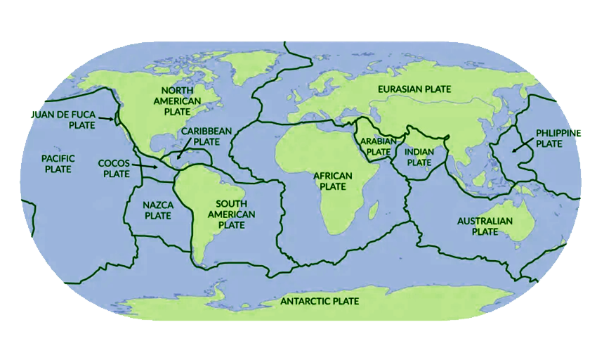
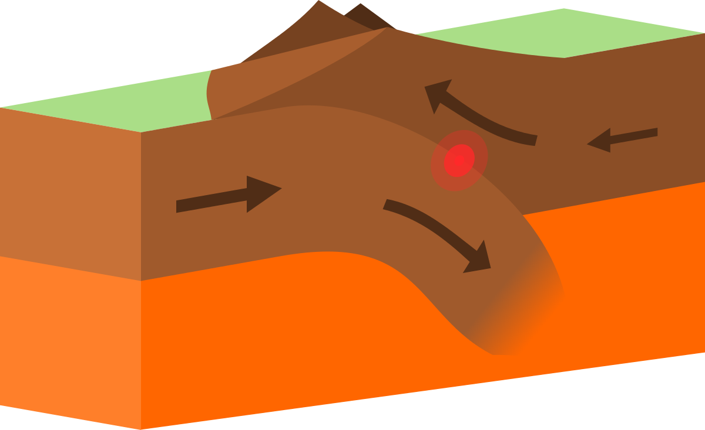
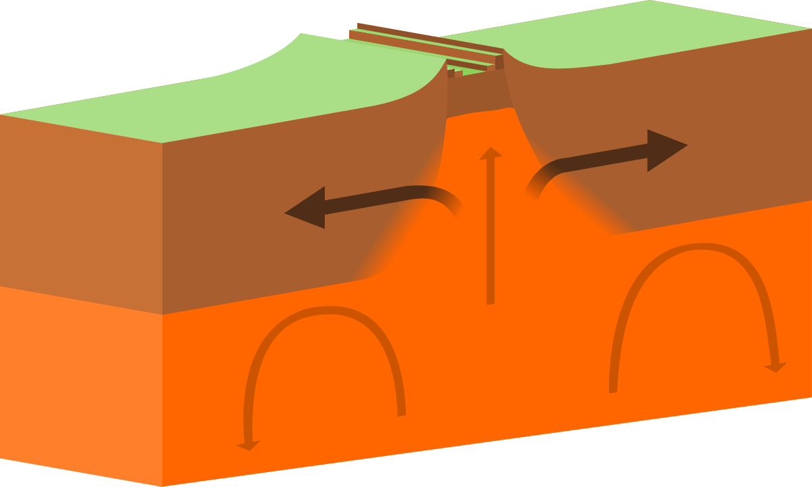
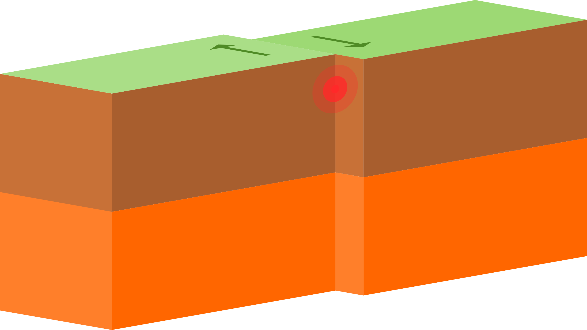

The geosphere/lithosphere consists of the crust, mantle, and core collectively forming the solid outer layer of the Earth.
Sand, rocks, mountains, ocean floors, canyons, and even magma are all part of the lithiosphere.
The outermost layers of Earth's structure is bounded by the atmosphere above and the asthenosphere.
LANDFORMS
PLAINS
A plain is a landmass that is flat or gently rolling and covers many miles. There are also different types of plains such as prairies, grasslands and steppes. There are a few ways that plains are formed. The first plains were created from lava flowing on Earth. Lava can burn things and make things that were almost flat, flatter. Erosion and deposits can also create plains.
MOUNTAINS
They usually have steep sloping sides and sharp or rounded ridges and a high point called a peak or summit. Most geologists classify a mountain as a landform that rises at least 1,000 feet (300 meters) or more above its surrounding area. A mountain range is a series or chain of mountains that are close together.
VOLCANOES
Volcanic landforms on the Earth range are shapes and sizes from tiny scoria cones to enormous flood basalt or ignimbrite plateaux. Controls on the final volcanic landform include magma composition and volume, tectonic environment, nature of the crust, and posteruption erosion. Most volcanoes are stratovolcanoes like Mount Mayon in the Philippines.
VALLEYS
Valleys represents low areas of land surrounded by elevated landforms such as mountains, hills, or plateaus. The different types include V-shaped (river), U-shaped (glacier), rift, and flat-floored valleys. Also Most of the valleys are formed by rivers that erode, or wear down, soil and rocks. Example is the Giant valleys, called rifts, that when two pieces of Earth's crust are separated or split apart.
PLATEAUS
Plateaus is a flat, elevated landform that rises sharply above the surrounding area on at least one side. Plateaus occur on every continent and take up a third of the Earth's land. They are one of the four major landforms, along with mountains, plains, and hills.
TECTONIC
|

|
TYPES OF PLATE BOUNDARIES
CONVERGENT - Convergent Boundaries occur where tectonic plates collide with each other.
|

|
DIVERGENT - Tectonic plates move away from each other. This movement creates space for magma from the mantle to rise and solidify, forming a new crust.
|

|
TRANSFORM- Two plates sliding past each other forms a transform plate boundary. One of the most famous transform plate boundaries occurs at the San Andreas fault zone, which extends underwater. |

|
REFERENCES |
|
1.) Lithosphere. (n.d.). https://education.nationalgeographic.org/resource/lithosphere/ 2.) Major Landforms of the Earth: Mountains, Plateaus, Plains with Examples. (2020, May 18). Toppr-guides. https://www.toppr.com/guides/geography/major-landforms-of-the-earth/some-major-landforms-of-the-earth/ 3.) What are the different types of plate tectonic boundaries?: Exploration Facts: NOAA Office of Ocean Exploration and Research. (n.d.). https://oceanexplorer.noaa.gov/facts/plate-boundaries.html 4.) Understanding plate tectonic Theory. (2020, August 31). https://www.earthquakeauthority.com/blog/2020/understanding-plate-tectonic-theory 5.) Plate tectonics. (n.d.). https://education.nationalgeographic.org/resource/plate-tectonics/ |